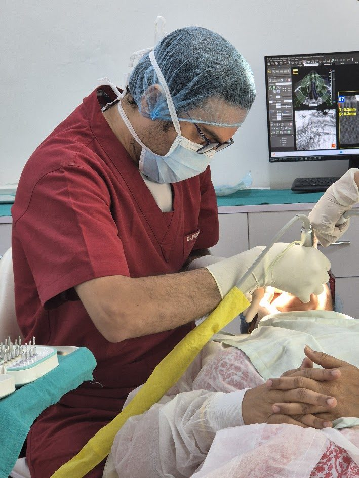
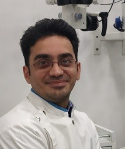
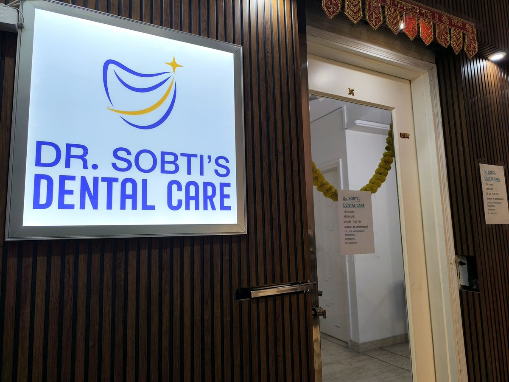
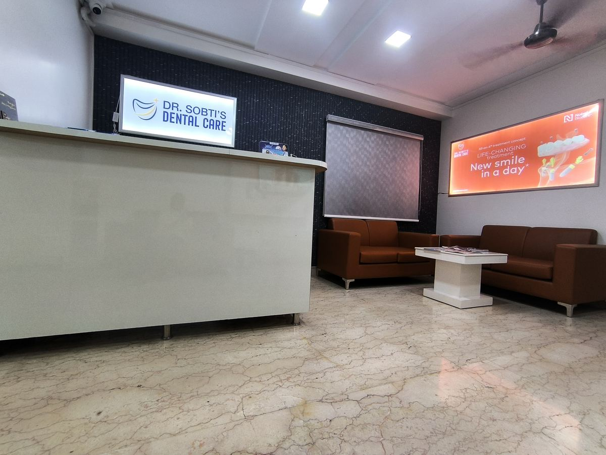
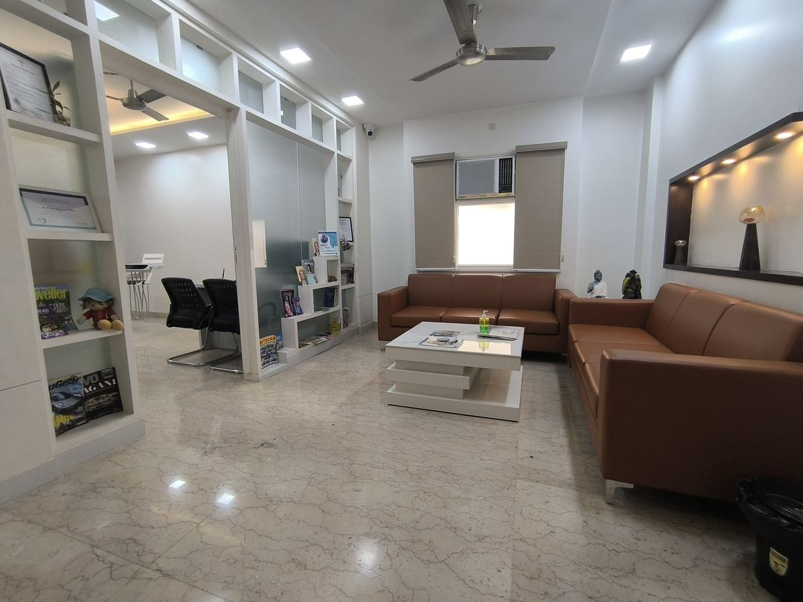
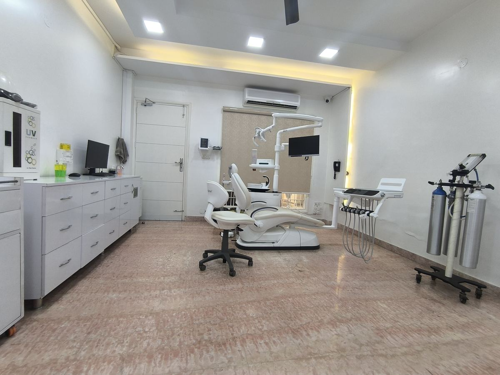
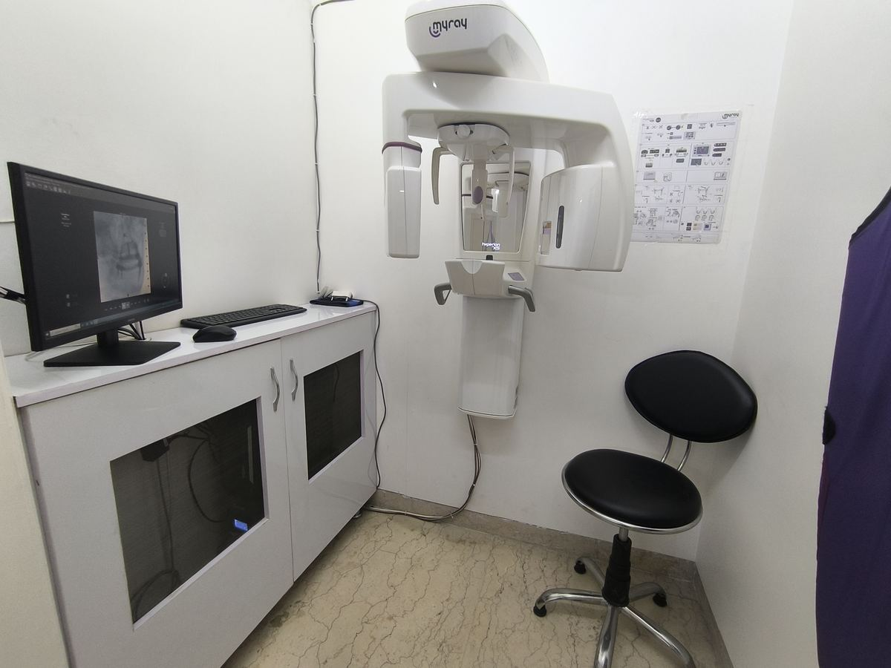
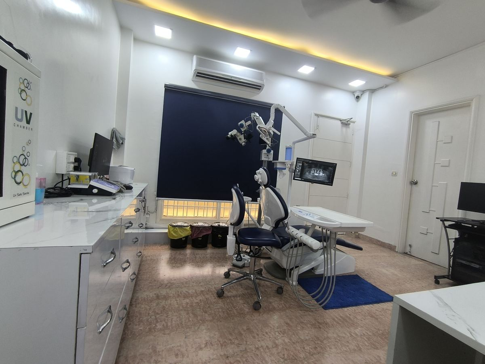
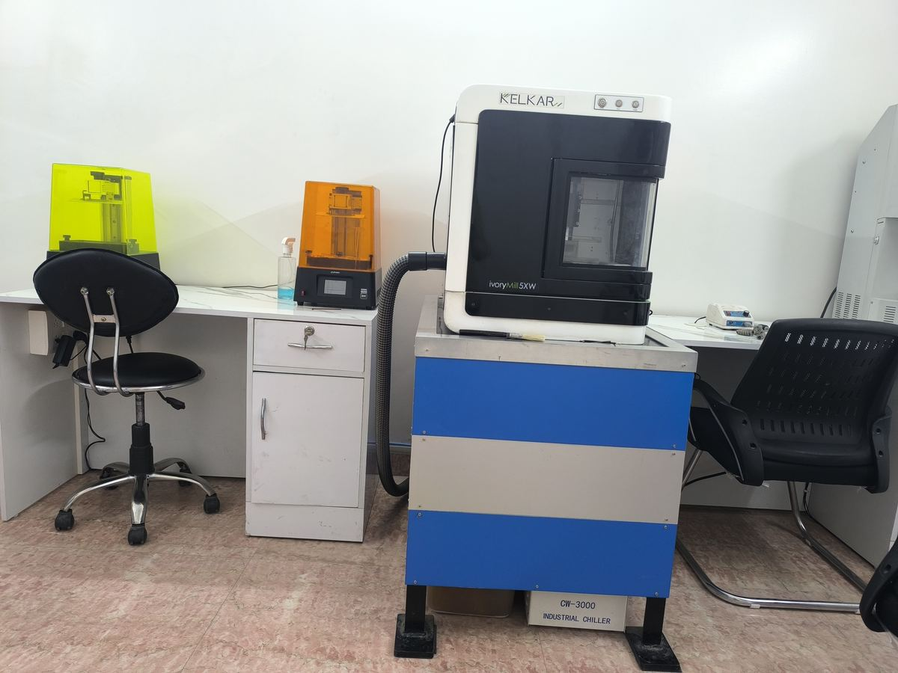
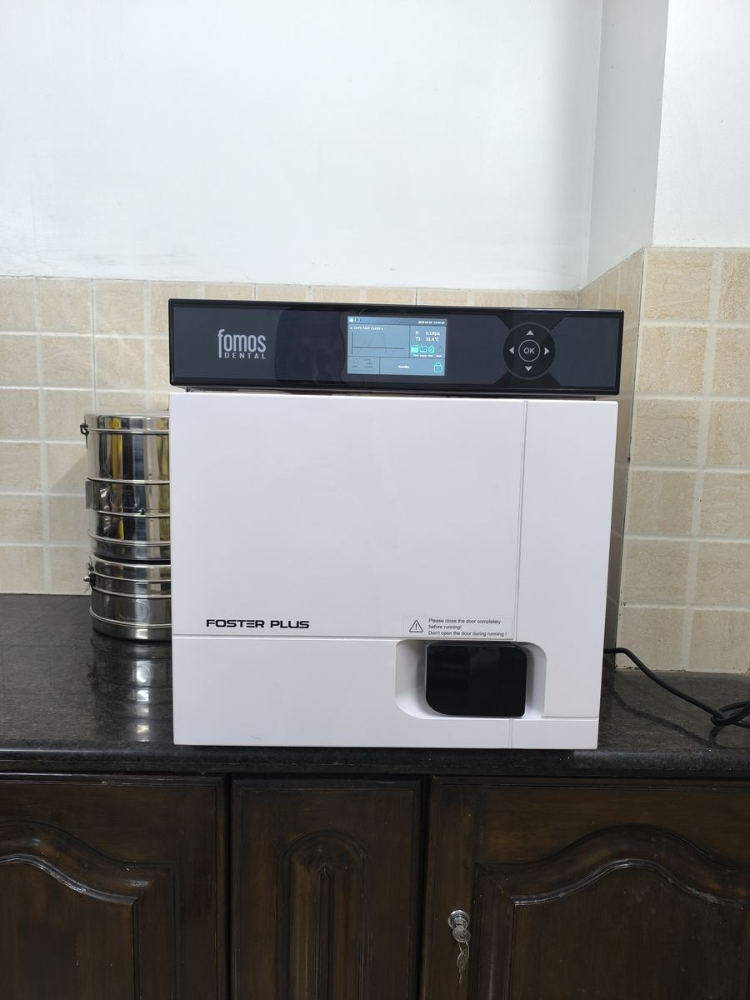

CBCT 3D scanner
A 3D X-ray of the jaw that shows bone height, width and the position of nerves and sinuses. MyRay X5.
I'm Dr Pushkar Sobti. I specialise in full-mouth implants: All-on-4, All-on-6 and All-on-X. At Dr Sobti's Dental Care every case is scanned, designed and guided on a fully digital workflow, for patients from Delhi and from around the world.


Implant dentistry is engineering inside a living body. A 4.1 × 10 mm titanium post has to sit in the right bone, at the right angle, clear of nerves and sinuses, and then carry a crown that looks and bites like a natural tooth. I chose this work because getting those details right changes how people eat, speak and smile.
Giving someone back the ability to smile and chew, after years of suffering with lost, broken or missing teeth, is the best feeling there is. That is why I have spent 18 years on implant dentistry, and more than 5,000 implants later it still is.
One patient sums it up. He was 79, a cancer survivor, and had been told that implants were impossible because of his age and his weak bone. Today he eats everything and enjoys his life. Cases like his are why I focus on full-arch and complex implant work.
Outside the clinic I am learning to use AI to change how digital dentistry is done. When I am not at work I am usually camping, driving, hiking or exploring somewhere new.
BDS, MDS, PG in Oral Implantology (UCAM University)
Nobel Biocare NobelActive TiUltra, Hiossen ET IV, Osstem TS IV CA
Indian Society of Oral Implantologists (ISOI), Academy of Oral Implantology (AOI), Indian Dental Association (IDA)
English, Hindi
All-on-X replaces every tooth in the upper or lower jaw with a fixed bridge held by four, five or six implants. The back implants are often tilted to use the strongest bone, which means many patients who were told they needed bone grafts can avoid them. In suitable cases you leave with fixed temporary teeth within 24 to 72 hours of surgery.
Four implants per arch. The usual choice when bone is limited at the back of the jaw. From ₹3,00,000 per arch.
Six implants per arch, spreading the bite across more support. Often chosen for the upper jaw or a strong bite.
The number and angle of implants are planned for your bone on the CBCT scan, not fixed in advance.
Anchored in the cheekbone or the back of the upper jaw when there is severe bone loss, so fixed teeth are possible without a bone graft. Zygomatic implants start from ₹80,000 per implant and pterygoid implants from ₹50,000 per implant.
CBCT, intraoral scan and smile photos. Digital smile design.
Guided placement of all implants in one session.
Screw-retained temporary teeth fitted, in suitable cases.
Implants fuse with the bone. Video check-ups if you live abroad.
CAD/CAM-designed zirconia or hybrid bridge fitted.
This site is my personal page. Appointments, fees and the full team live on the clinic's own website, which runs alongside this one: sobtidentalcare.com.
Dr Sobti's Dental Care is a family practice. My father has run the clinic since 1982, and I have practised independently since 2009. Today a team of 12 works across a dedicated implant surgery room (OT) and two chairs for general dentistry. Every instrument goes through a Class B autoclave, the hospital standard for sterilisation. Patients rate us 5 stars on Google from more than 200 reviews.
First Floor, J 12/26, Block J, Rajouri Garden Extension, New Delhi 110027
WZ 168, Mangal Bazar Road, Shyam Nagar Extension, Chand Nagar, New Delhi 110018
10 am to 7 pm, 7 days a week
12 people, and growing








One implant, one abutment, one crown. From ₹35,000, including guided surgery, an Osstem implant, a custom abutment and a zirconia crown with a 3-year warranty.
Two or more implants carrying a bridge across several missing teeth.
A full fixed arch of teeth on four or six implants, often fitted with temporary teeth the same day.
The implant goes in on the day the tooth comes out, when the bone allows it.
Fixed temporary teeth on new implants within days of surgery, in suitable cases.
For severe bone loss in the upper jaw, without a bone graft.
Rebuilding thin or lost bone so it can hold an implant.
Raising the sinus floor to make room for implants in the upper back jaw.
Growth factors prepared from your own blood to help gums and bone heal faster.
Planning bite, gums and teeth together for a complete restoration.
Professional cleaning, checks and treatment of gum problems around implants.
Exam, medical history and a CBCT 3D scan.
Implant size and position planned on the scan; guide printed.
Under local anaesthesia, usually 30–60 minutes per implant.
The bone fuses with the implant (osseointegration).
Digital scan, crown made and fitted.
Every implant case is scanned, designed and guided digitally, from the first scan to the final teeth. The result is more precise placement, less time in the chair and fewer visits, which matters most when you are travelling.
Bone and teeth captured in 3D.
Your new teeth designed first.
Implants placed virtually to support that design.
Surgery follows the plan.
Bridge milled from the digital design.
A 3D X-ray of the jaw that shows bone height, width and the position of nerves and sinuses. MyRay X5.
A small camera captures the teeth in 3D. No impression trays. Three scanners: Medit i900, Medit i500 and Upcera.
Each implant is placed virtually on the scan before surgery. exoplan and Blue Sky Bio.
A guide made from the plan steers the drill to the planned angle and depth.
Measures insertion torque in Ncm, so we know how firmly each implant is held. Three units in the clinic.
Measures implant stability on a 1–100 scale to decide when it is ready for a crown.
Ultrasonic instruments cut bone precisely and spare the soft tissue around it.
Prepares growth factors from the patient's own blood to support healing.
Zirconia and ceramic crowns designed on screen and milled in-house on three machines: a Roland dry mill for zirconia, an Upcera wet mill for glass ceramics and PMMA, and a Kelkar wet mill for titanium.
Your new teeth are designed in exocad before any implant is planned.
A dental microscope and three sets of loupes for magnified, precise work.
You stay relaxed and responsive through longer procedures.
A new chapter every other day. The story starts with what an implant is and why teeth matter, walks through our clinic and a real implant day, and ends with the advanced cases and the future of the field. Read it in order.
Will it hurt? Can my body reject it? Will it beep at the airport? These are the questions I get every week, and most of what people have heard is wrong. Six myths, and what actually happens.
Patients travel to Delhi for All-on-X because they get a specialist, a fully digital clinic and a fixed price, at a fraction of the cost at home. In the USA a full arch typically costs $35,000 to $55,000.
Our patients have come from the US, Canada, the UK, Scotland, Germany, Italy, France, Denmark, Poland, Russia, Ukraine, Kazakhstan, Iran, Saudi Arabia, Nigeria, South Africa, Sri Lanka, Malaysia, Indonesia, Australia and New Zealand.
Send your X-ray or CBCT scan and a few photos on WhatsApp. I reply personally within 24 hours with an explanation and a plan.
Implants, temporary and final teeth, scans and follow-ups, with the number of days you need to stay. Pay by card, cash or bank transfer.
A medical visa invitation letter, partner hotels near the clinic, and airport pickup (paid) on request.
A typical full-arch stay, including all follow-ups.
Video reviews and a maintenance guide your local dentist can follow.
A single implant with crown starts from ₹35,000, including guided surgery, an Osstem implant, a custom abutment and a zirconia crown with a 3-year warranty. The final cost depends on the implant system and whether bone grafting is needed. You get a written estimate after your CBCT scan.
All-on-4 starts from ₹3,00,000 per arch. The final cost depends on the implant system and the material of the final teeth. The quote covers the implants, fixed temporary teeth, final teeth, scans and follow-up visits. You receive a fixed written quote after your CBCT scan or a free online assessment.
Yes. Send your X-ray or CBCT scan and photos for a free online assessment, and I reply within 24 hours. A typical full-arch stay is about 15 days, including all follow-ups.
It is done under local anaesthesia, so you feel pressure but not pain. Most people have mild soreness for a few days, managed with ordinary painkillers.
With good brushing, regular check-ups and no smoking, implants can last for decades. The crown may need replacing after 10 to 15 years from normal wear.
Usually 3 to 6 months from consultation to final crown, while the bone fuses with the implant. In suitable cases we fit temporary teeth on the same day.
Often yes. Bone grafting or a sinus lift can rebuild the bone, and the CBCT scan shows exactly how much bone is there before we plan.
There is no upper age limit. General health matters more than age, and many of our implant patients are in their 70s and 80s.
Message us on WhatsApp with your X-ray or scan, or call the clinic to book a consultation in Delhi.